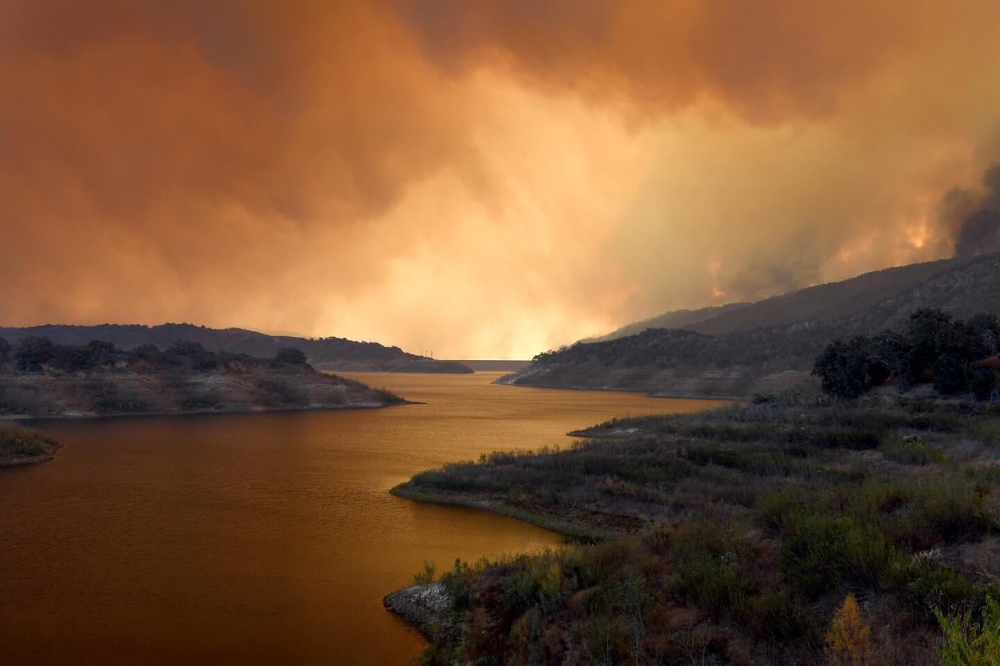
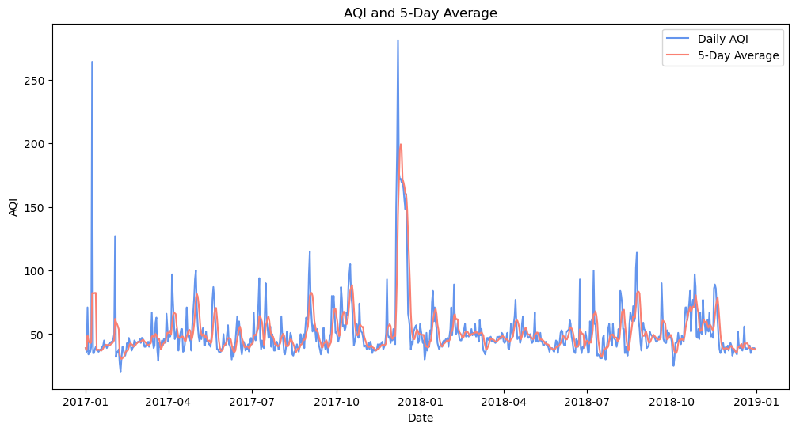

The Thomas Fire was a wildfire that occured in December 2017 in Santa Barbara County and it had devastating impacts on the community. Knowing the risks, dangers, and effects of wildfires on populated areas, my analysis aims to visualize data surrounding key aspects of wildfires: the damage to the physical area and the air quality. In order to to do this, I will create a false color image to understand the burn area of the Thomas fire in 2017 as well as create a visualization to show the impact of air quality in Santa Barbara during the time period of the fire.

Pictured: Thousands of Acres Burn Across Santa Barbara County. Sourced by Al Seib of the Los Angeles Times
-Data wrangling and manipulation of raster and tabular data
-Data analysis to calculate moving averages for air quality index during the period of the Thomas Fire (2017)
-Creating and customizing a map of the Thomas Fire burn area and AQI moving averages from 2017-2018
About the Data:
Dataset 1: Landsat Data
A simplified collection of bands (red, green, blue, near-infrared and shortwave infrared) from the Landsat Collection 2 Level-2 atmosperically corrected surface reflectance data, collected by the Landsat 8 satellite. For more information on Landsat bands, reference: (https://www.usgs.gov/faqs/what-are-band-designations-landsat-satellites)
National Air Quality Index (AQI) data from the US Environmental Protection Agency. I am specifically going to analyze AQI data for 2017 and 2018 in Santa Barbara County.
#Importing Librariesimport osimport numpy as npimport pandas as pdimport geopandas as gpdimport rioxarray as rioxrimport xarray as xrimport pandas as pd from shapely.geometry import Polygon import matplotlib.pyplot as pltfrom matplotlib.patches import Patchfrom shapely.geometry import Pointimport matplotlib.lines as mlines
Code
# Importing Data#Reading in bands data bands = os.path.join(os.getcwd(), 'data', 'landsat8-2018-01-26-sb-simplified.nc') bands = rioxr.open_rasterio(bands)#Reading in CA fires data ca_fires = gpd.read_file(os.path.join(os.getcwd(), 'data', 'California_Fire_Perimeters_2017.shp'))#Reading in AQI data for 2017 and 2018aqi_17 = pd.read_csv("https://aqs.epa.gov/aqsweb/airdata/daily_aqi_by_county_2017.zip")aqi_18 = pd.read_csv("https://aqs.epa.gov/aqsweb/airdata/daily_aqi_by_county_2018.zip")
Data Wrangling
Let’s update the datasets and clean anything that may need updated and wrangle the data to be more aligned with what we’re hoping to analyze.
We want to simplify the columns in the datasets and make sure we do not have any extra dimensions in our bands dataframe.
Then, we want to combine our 2017 and 2018 dataframes into one and wrangle the data so we only have the location and columns we care about.
We then want to narrow our data focus and update it to specifically look at the Thomas Fire and Santa Barbara County.
Lastly, we need to make sure all mapping data is in the same CRS so we can project it on the same scale.
Code
1.## Making the CA Fires columns lowercase ca_fires.columns = ca_fires.columns.str.lower()ca_fires.head() #checking the columns were updated## Removing the band from the bands dataframe:bands = bands.squeeze()bands = bands.drop('band')print(bands.dims, '\n', bands.coords, '\n') #checking the band was removed from our dataframe
Code
2.#Updating AQI Data:# Combining the dataframes into oneaqi = pd.concat([aqi_17, aqi_18])# We also want to reset the indexaqi = aqi.reset_index(drop=True)print(aqi.index) #yes we can confirm this looks right# Checking the columns:print(aqi.columns, '\n')#We want to make them lowercase now:aqi.columns = aqi.columns.str.lower()print(aqi.columns, '\n')#We still see that there are spaces in the names, so lets replace with a '_'aqi.columns = aqi.columns.str.replace(' ','_')print(aqi.columns) #Nice, the columns look good!
Code
#3. Looking at just the Thomas Fire and Santa Barbara county. #AQI DATA# Selecting data from 'Santa Barbara' countyaqi_sb = aqi[aqi['county_name'] =='Santa Barbara'].copy()# Dropping specified columnscolumns_to_drop = ['state_name', 'county_name', 'state_code', 'county_code']aqi_sb.drop(columns_to_drop, inplace=True, axis =1)# Checking data types of the columnsprint(aqi_sb.dtypes)#The data column is stored as an object and it needs to be converted to datetime!# Updating the date column to a datetime objectaqi_sb['date'] = pd.to_datetime(aqi_sb['date'])# Setting the index to be the date columnaqi_sb.set_index('date', inplace=True)# Checking the updated DataFrameprint(aqi_sb.index)#the data type is datetime, which looks correct! # CA FIRES DATA# Making sure I have just the Thomas Fire data:ca_fires_new = ca_fires[ca_fires.fire_name =="THOMAS"]
Code
# 4. Updating the CRS's:print(ca_fires.crs)print(bands.rio.crs)#I noticed they are different so I'm going to convert the CA crsca_fires_new = ca_fires_new.to_crs(32611)#checking to make sure the crs is updated:ca_fires_new.crs == bands.rio.crs
Data Analysis
Calculating the Rolling Averages
We want to evaluate the change in air quality from before, during, and after the fire in 2017 and 2018. To do this, we need to calculate a 5 day rolling average of the air quality index data. To do this, we first need to make sure we are only looking at Santa Barbara County data, combine our 2017 and 2018 data, and clean up any fields necessary. Then we can calculate moving averages and plot the data to evaluate any impacts of the Thomas Fire on Santa Barbara County.
Code
#Calculating rolling window for the AQI_SB data:aqi_sb.aqi.rolling('5D').mean()# Adding a new column with the 5-day rolling mean:aqi_sb['five_day_average'] = aqi_sb.aqi.rolling('5D').mean()
Now we can plot the rolling averages!
Code
#Plotting the AQI 5-day average:plt.figure(figsize=(12, 6))plt.plot(aqi_sb.index, aqi_sb['aqi'], label='Daily AQI', color='cornflowerblue')plt.plot(aqi_sb.index, aqi_sb['five_day_average'], label='5-Day Average', color='salmon')plt.title('AQI and 5-Day Average')plt.xlabel('Date')plt.ylabel('AQI')plt.legend()plt.show()

Creating a Map of CA Thomas Fire
We also want to understand the impacts of the Thomas Fire on Santa Barbara County through mapping. To do this, we are going to create a false color image of Santa Barbara County with the landsat bands data and map this with our Thomas fire perimeter to understand where in California the fire spanned and how large it was.
Code
#Creating a false color image bands[["swir22", "nir08", "red"]].to_array()#Now we have our image we can graph this with our Thomas Fire perimeter
Code
## Plotting the shapefilefig, ax = plt.subplots()size =6#height in of plot aspect = bands.rio.width/bands.rio.heightfig.set_size_inches(size, size*aspect) #why? bc cannot use ax and size aspect togetherbands[["swir22", "nir08", "red"]].to_array().plot.imshow(ax=ax, robust =True)ca_fires_new .plot(ax=ax,facecolor='none', edgecolor='red', linewidth=2, alpha=0.5)## Set plot titleplt.title('Map of the Thomas Fire Perimeter (2017) in California')# Remove the axesplt.axis('off')# Set legend with linestyle='None'legend_elements = [mlines.Line2D([0], [0], color='red', marker ='_', linestyle='None', markersize=10, label='Thomas Fire')]# Add legendax.legend(handles=legend_elements)## Showing the plotplt.show()